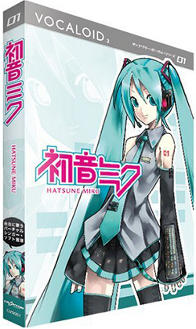

Development
Marketing
Featured Music
External Links

Hatsune Miku, also known as Miku Hatsune, is a virtual idol created by Crypton Future Media. She is represented as a 16-year-old girl with long, turquoise twintails and is a character associated with Vocaloid software. Miku's voice is generated using Yamaha Corporation's Vocaloid technology, specifically Vocaloid 2, Vocaloid 3, and Vocaloid 4, along with Crypton Future Media's Piapro Studio. She was the second Vocaloid created using the Vocaloid 2 engine and the first Japanese Vocaloid to use this engine.
The name "Hatsune Miku" is derived from merging the Japanese words for "first" (初, hatsu), "sound" (音, ne), and "future" (ミク, miku), signifying "the first sound of the future." She is part of Crypton's "Character Vocal Series" (CV Series) and is designated as CV01, preceding other characters like Kagamine Rin/Len (CV02) and Megurine Luka (CV03). The number 01 can be seen on her left shoulder in official artwork. Miku has been featured in virtual concerts using rear-cast projection technology, making her a prominent figure in the world of virtual entertainment.
Hatsune Miku, the first Vocaloid developed by Crypton Future Media, was part of the "Character Vocal Series" (CV Series), which also included Kagamine Rin/Len and Megurine Luka. Miku utilized Yamaha's Vocaloid 2 technology, and her voice was created by sampling voice actress Saki Fujita at a controlled pitch and tone. These samples were combined to form lyrics and phrases, with pitch adjustments made by the software.
Crypton released Hatsune Miku on August 31, 2007, with the concept of her being an "android diva in a world where songs are lost." She was later updated for Vocaloid 3 on August 31, 2013, including an English vocal library. Miku marked Crypton's first independent development of a Vocaloid, following their previous handling of Yamaha's Meiko and Kaito vocals, making her the third Vocaloid commercially offered by the company.
Since 2008, Miku has received extensive promotion and was initially targeted at professional musicians. On September 12, 2007, Amazon.co.jp reported sales of Hatsune Miku reaching a total of 57,500,000 yen, making her the top-selling software at that time. She was Crypton Future Media's first vocal creation, and her singing was in Japanese. Miku's rapid success can be attributed to Vocaloid's popularity in Japanese culture. It's worth noting that she reportedly sold 40,000 units by July 2008, with an average weekly sales rate of 300 units. By January 2011, her sales had reached 60,000 units.
Hatsune Miku has gained immense popularity since 2008, with thousands of original songs created for her by 2010, and her song count reaching 100,000 by 2011. Crypton Future Media promotes her by highlighting her involvement in over 100,000 unique songs.
She made history when the album "Exit Tunes Presents Vocalogenesis feat. Hatsune Miku" became the first Vocaloid album to top the Japanese weekly Oricon album charts in 2010. Other albums like Supercell's and Livetune's also feature Miku's voice. Her influence extends to various covers and adaptations, including the Nyan Cat meme and the opening theme of the anime series Freezing.
As a virtual idol, Hatsune Miku performed in live virtual concerts starting from 2009 and made her first overseas appearance in 2009 in Singapore. Her popularity grew, leading to solo live performances and concerts in the United States and Japan. She even opened for Lady Gaga during her world tour.
Hatsune Miku's collaborations expanded to include a music video with the Japanese band Bump of Chicken, a remix by Pharrell Williams, a performance on the Late Show with David Letterman, and appearances in songs by artists like Big Boi, Slushii, and Ashnikko.
In January 2020, she was set to perform at Coachella 2020, but the event was canceled due to the COVID-19 pandemic. In December 2020, she was featured in a remixed version of American rapper Ashnikko's song "Daisy."